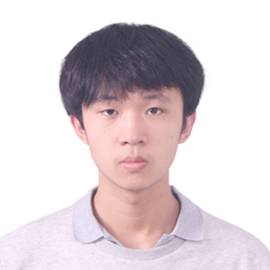

|
Zhuolin Yang
I'm a 3rd-year Ph.D. candidate at University of Illinois at Urbana-Champaign (UIUC), advised by Prof. Bo Li.
My research interests are mainly on Trustworthy Machine Learning and Privacy in ML, especially exploring robustness conditions within ensemble ML models, adversarial transferability analysis, and Federated Learning.
Email /
GitHub /
CV
|

|
-
Zhuolin Yang, Zhikuan Zhao*, Hengzhi Pei, Boxin Wang, Xiangyu Qi, Bojan Karlas, Ji Liu, Heng Guo, Bo Li, Ce Zhang.
Under review.
-
Zhuolin Yang, Linyi Li*, Xiaojun Xu, Bhavya Kailkhura, Bo Li.
Under review.
-
Zhuolin Yang, Linyi Li*, Xiaojun Xu*, Shiliang Zuo, Qian Chen, Pan Zhou, Benjamin Rubinstein, Ce Zhang, Bo Li.
International Conference on Neural Information Processing Systems (NeurIPS), 2021
-
Yunhui Long, Boxin Wang, Zhuolin Yang, Bhavya Kailkhura, Aston Zhang, Carl Gunter, Bo Li.
International Conference on Neural Information Processing Systems (NeurIPS), 2021
-
Kaizhao Liang*, Jacky Zhang*, Boxin Wang, Zhuolin Yang, Sanmi Koyejo, Bo Li.
International Conference on Machine Learning (ICML), 2021
-
Zhuolin Yang, Zhaoxi Chen, Tiffany Cai, Xinyun Chen, Bo Li, Yuandong Tian*.
International Conference on
Artificial Intelligence and Statistics (AISTATS), 2021
-
Zhuolin Yang, Bo Li, Pin-Yu Chen, Dawn Song
International Conference on Learning Representations (ICLR), 2019
-
Peiyao Sheng, Zhuolin Yang, Yanmin Qian.
IEEE Automatic Speech Recognition and Understanding Workshop (ASRU), 2019
-
Peiyao Sheng, Zhuolin Yang, Hu Hu, Tian Tan, Yanmin Qian
International Symposium on Chinese Spoken Language Processing (ISCSLP), 2018 (Oral)
-
Secure Learning Lab, University of Illinois Urbana-Champaign, Sept 2019 -- Present
-
Secure Learning Lab, University of Illinois Urbana-Champaign, Sept 2018 -- Dec 2018
-
-
Speech Lab, Shanghai Jiao Tong University, Sept 2017 -- July 2018
-
44th Annual ICPC World Finals Championship, Bronze Medal (11th Place)
Team Must Pass, Zhuolin Yang, Yen-Hsiang Chang, Zihan Wang
-
2020 ICPC North America Mid-Central Regional Contest, 2nd place
Team UIUC-D, Zhuolin Yang, Peiyao Sheng, Hanxuan Chen
-
2020 UIUC-Michigan Terminal Virtual AI Competition, 4th Place
Team Must Pass, Zhuolin Yang, Yen-Hsiang Chang, Zihan Wang
-
2020 NSA's ICPC Cyber Challenge, 2nd Place
Team Must Pass, Zhuolin Yang, Yen-Hsiang Chang, Zihan Wang
-
2020 ICPC North America Championship, Mid-West Champion
Team Must Pass, Zhuolin Yang, Yen-Hsiang Chang, Zihan Wang
-
2019 ICPC North America Mid-Central Regional Contest, Champion
Team Must Pass, Zhuolin Yang, Yen-Hsiang Chang, Zihan Wang
-
2016 ACM-ICPC Asia Yangon Regional Contest, Myanmar, 9th Place
Team Laevateinn, Yuda Fan, Zhuolin Yang, Yaoyao Ding
-
2016 CCPC Hefei Regional Contest, China, Gold Medal
Team Laevateinn, Yuda Fan, Zhuolin Yang, Yaoyao Ding
-
2015 ACM-ICPC Asia Singapore Regional Contest, Singapore, 8th Place
Team Hydrogenous Prominence, Zhi Qiu, Zhuolin Yang, Yifei Pu
-
2015 ACM-ICPC Asia Shanghai Regional Contest, China, Gold Medal
Team Hydrogenous Prominence, Zhi Qiu, Zhuolin Yang, Yifei Pu
-
2015 CCPC-Final Contest, China, Gold Medal
Team Hydrogenous Prominence, Zhi Qiu, Zhuolin Yang, Yifei Pu
-
Ray Ozzie Fellowship, 2019
Annual Fellowship in UIUC
-
Eleme Scholarship, 2016
Top 5% students in the CS department
-
Zhiyuan Honorary Scholarship, 2015 and 2016
Excellent students in Zhiyuan College
-
Academic Excellence Scholarship (2nd place), 2015 and 2016
Top students award in Shanghai Jiao Tong University
|